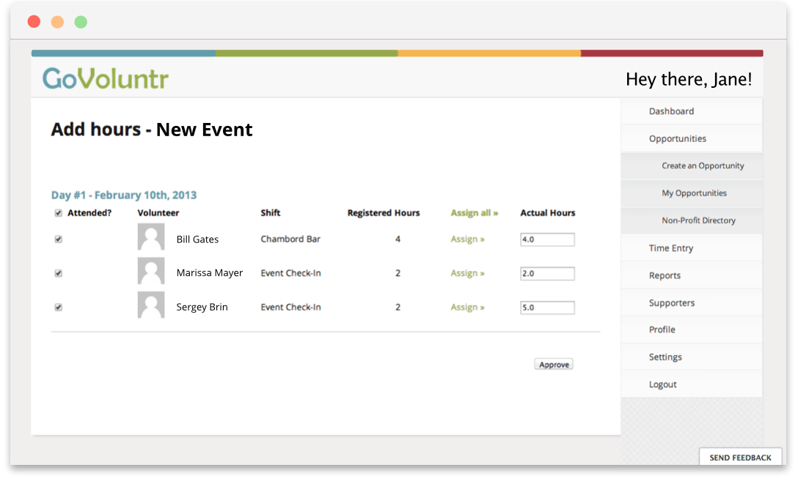
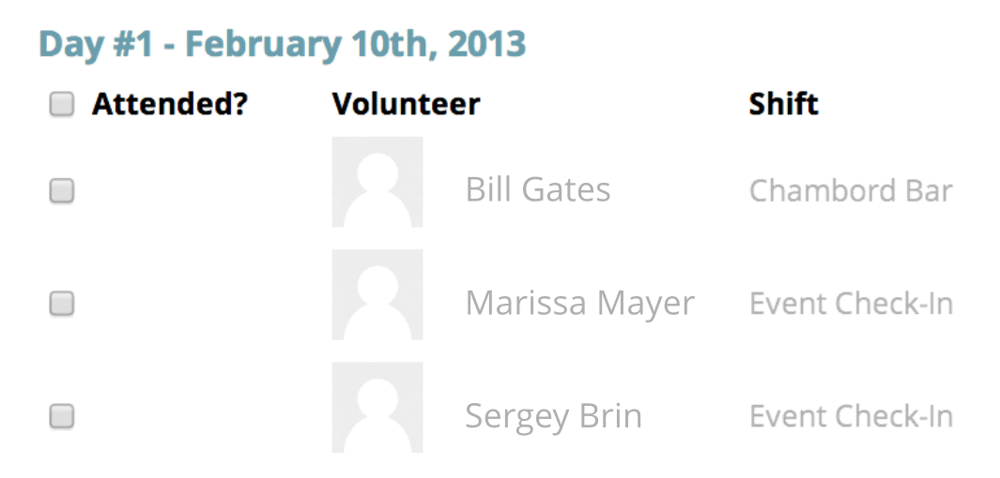
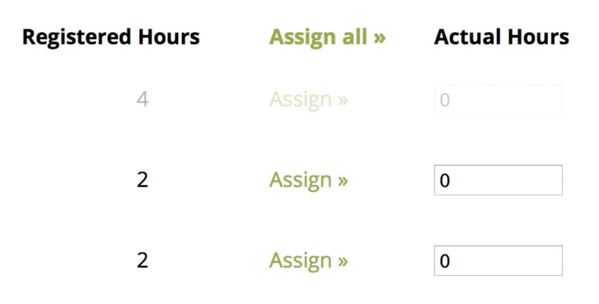
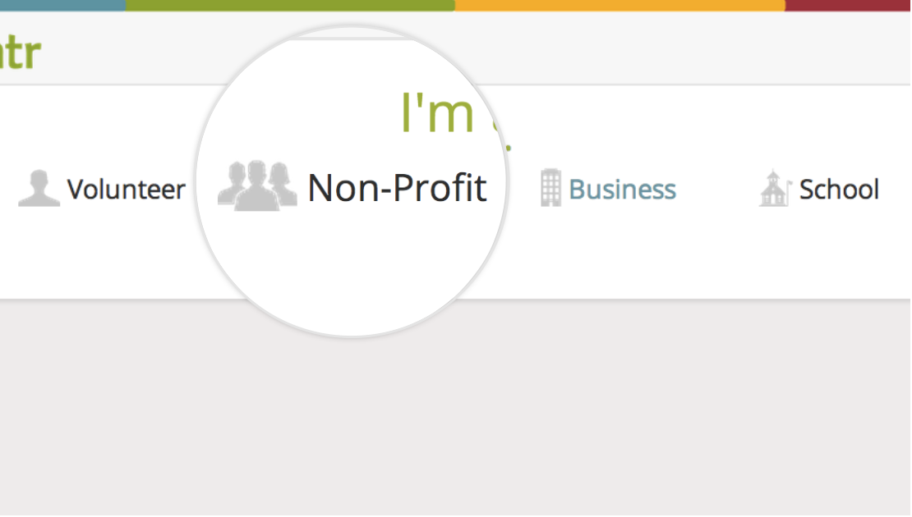
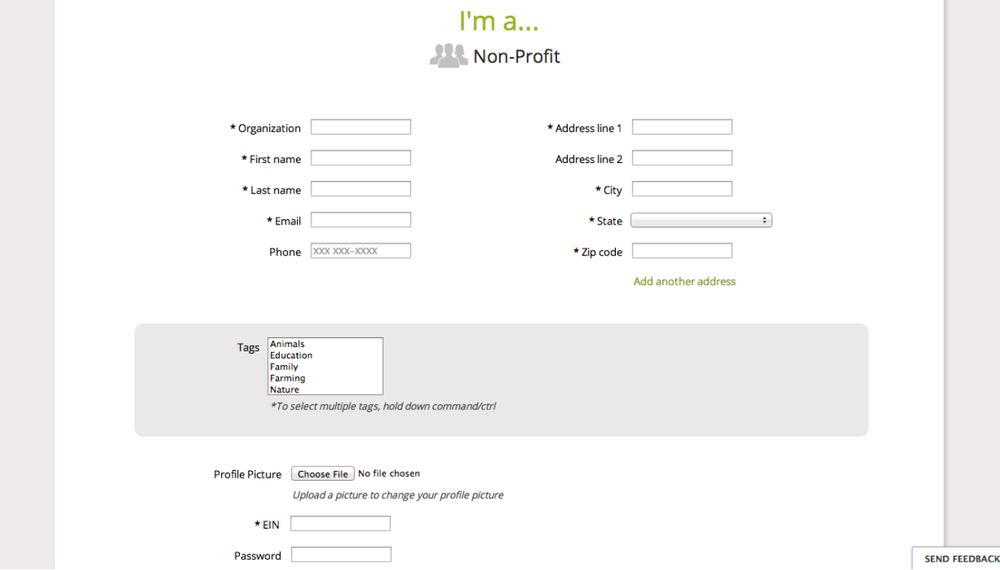

If your opportunity is still active: |
If your opportunity has ended: |
(if it's recurring or takes place over multiple days) head back to your dashboard. |
go to the menu on the right. Click Opportunities, then My Opportunities, and find your opportunity on the left (the most recent are on the top). |
Click on the second icon under your opportunity to get to the Approve Hours page:
Here, you can approve and edit the hours of your volunteers.
Check the "Attended" column if a volunteer showed up (bulk select with the top checkbox). |
 |
|  | To assign hours, either click "Assign", which gives a volunteer the number of hours he or she registered for (bulk assign with the top "Assign all" link), OR edit the hours in the text box. |
When you're done with all of your volunteers, click "Approve".
Enter the email or volunteer ID (as recorded on the sign in sheet) of the volunteer you’d like to add hours to. |
 |
Select the correct volunteer from the search results, enter the date of the opportunity, and add the hours. |
 |
You’ve now mastered the the process of posting, preparing for, and following up with an opportunity on GoVoluntr. Before you go off and inspire good, we have one more page introducing you to the other cool features on GoVo.